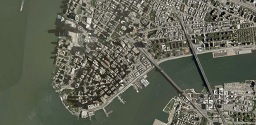
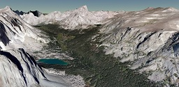

|  | Imagery | Imagery specifies the color and shading of the surface of the globe. |
|  | Terrain | Terrain describes the shape or surface geometry of the globe. |
Images in the table above use terrain and imagery data Copyright © Analytical Graphics, Inc., CGIAR-CSI, Microsoft Corporation, Earthstar Geographics SIO, NASA, Harris Corp., Earthstar Geographics LLC, and USGS.
Want to have your data listed here? Fork cesium-assets-list, add your data, and open a pull request. We'll also promote your data on the Cesium forum, blog, and twitter.